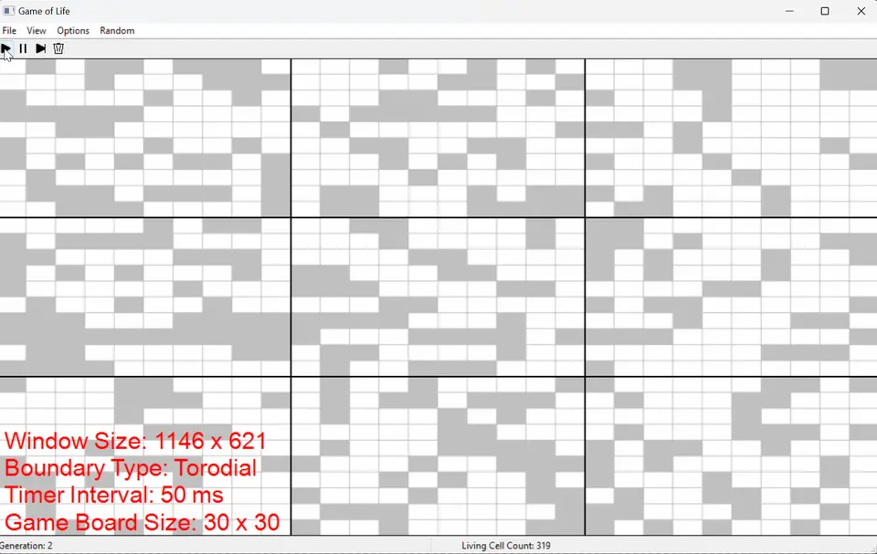

Side Project
Conway's Game of Life

Contributions
Cellular automata rules
wxWidgets rendering backend
File I/O for saved boards
Customisable grid + colours
Team Role:
Main Programmer
Team Size:
1
Development Time:
~3 weeks
About
Remake of the classical cellular automata simulation using wxWidgets as the rendering API backend.
Features file I/O for saving game boards, options for cell state colour, customisable grid size, and more.
Completed in roughly 3 weeks during my first Project and Portfolio class at Full Sail University.